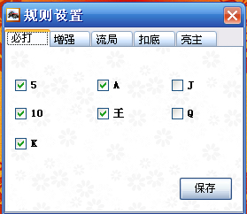
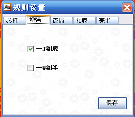
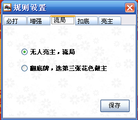
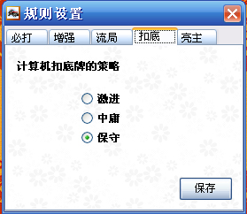
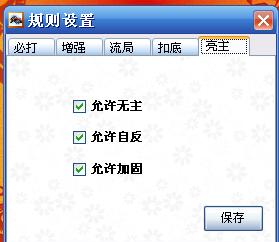

本游戏提供多种游戏规则组合。
必打规则：选择5、10、K、A、王、J、Q是否必打

增强的规则：在一些地方流行一J到底、Q到半的玩法。
庄家在打J时，如果下台，并且最后一把被J抠底，那么此庄家再上台时将从2开始打。
庄家在打Q时，如果下台，并且最后一把被Q抠底，那么此庄家再上台时将从6开始打。

流局规则：如果摸牌时无人亮主，那么有两种选择，一是流局，重新发牌，而是揭底，将八张底全部揭开，选第三张牌的花色作为主花色。

扣底规则：计算机在扣牌时，有三种扣牌算法可供选择：
1.激进算法，以扣绝一门为主要目标
2.中庸算法，以不扣分(5分除外)为主要目标
3.保守算法，以不扣分不扣对为主要目标

亮主规则：可以选择是否允许自反，加固和亮无主
